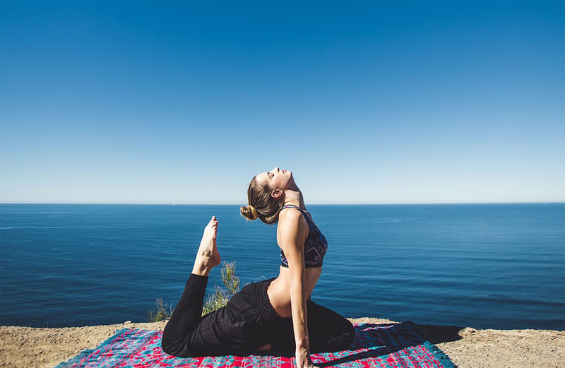

The impact of yoga on physical and mental health
The impact of yoga on physical and mental health can be significant and positive. Yoga practice includes physical postures (asanas), breathing exercises (pranayama), and meditation, which collectively contribute to achieving balance and harmony in the body. Physical asanas in yoga help strengthen the body, improve flexibility, endurance, and posture. They also contribute to improving circulation, lymphatic drainage, and overall physical fitness.
Through the practice of breathing exercises (pranayama), yoga helps to reduce stress and anxiety levels. Regular breathing practice contributes to improving lung function, reducing blood pressure, and stabilizing the nervous system. Meditation in yoga allows to calm the mind, improve concentration and focus, as well as develop mental clarity and mindfulness. It can help cope with negative emotions, improve mood, and overall mental well-being. Yoga practice also contributes to strengthening the immune system. It helps reduce inflammation in the body, improve digestion, and overall life energy. Yoga can also be helpful in managing chronic pain and improving sleep. It can promote muscle relaxation, tension relief, and improve sleep quality. Regular yoga practice can help improve posture and body alignment. It promotes strength and flexibility development, as well as strengthens core muscles.
#2. Relaxation techniques and meditation for improving health
Relaxation techniques and meditation play an important role in improving health and overall well-being. They help alleviate tension, improve mental state, and achieve inner harmony. One of the common relaxation techniques is deep breathing. Focus on inhaling and exhaling, regulating and deepening your breath. This can help reduce stress levels and tension in the body.

Meditation is also a powerful tool for relaxation and improving health. Find a comfortable place to sit, close your eyes, and focus on your breath or a mantra. Meditation can help calm the mind and enhance inner harmony.
Progressive muscle relaxation is a technique where you gradually and systematically relax each muscle group in the body. Starting from the feet and moving upwards, consciously tense and then relax each muscle group. This technique helps reduce physical tension and improve the feeling of relaxation.
Visualization is a technique where you create mental images in your imagination. You can imagine yourself in a place where you feel calm and happy, such as a beach or a forest. This technique will help you relax and distract yourself from everyday worries.
Aromatherapy is the use of aromatic oils and essential oils to achieve relaxation. Lavender, rose, eucalyptus, or other scents can be used to create a calm and relaxing atmosphere. Massage is another effective relaxation technique. Massage therapy helps to relieve muscle tension, improve circulation, and reduce stress levels. Active relaxation methods such as yoga or tai chi combine physical exercises with breathing techniques.
#3.Health and fitness in the digital age.
Health and fitness play an important role in the digital age, as technologies become increasingly integral parts of our lives. There are various ways in which digital tools and applications can help us maintain our health and fitness. Mobile apps for fitness and health offer a wide range of features and capabilities. They can provide personalized workouts, activity trackers to monitor physical activity, meal planners, and lifestyle improvement tips.

Fitness trackers, such as smartwatches and wristbands, allow us to track our physical activity, the number of steps taken, pulse rate, calories burned, and even sleep quality. They help us become more aware of our activity levels and motivate us to move more.
Online workouts and streaming platforms offer a wide range of workouts available anytime and anywhere. We can choose from various types of workouts, including yoga, aerobics, strength training, and dance. This is convenient and allows us to exercise even in our own homes.
John Smith
The article excellently emphasizes the importance of mental health and its influence on overall life. I will definitely apply the recommendations on meditation and stress resilience.
John Smith
"I already knew that physical activity is beneficial, but the article showed me how important it is to include various types of exercises in the workout routine to improve overall physical fitness and health."
John Smith
"The multi-faceted approach to health is what I like about this article. It prompted me to consider the importance of social connections and relaxation for overall well-being."
John Smith
"The multi-faceted approach to health is what I like about this article. It prompted me to consider the importance of social connections and relaxation for overall well-being."
John Smith
"The multi-faceted approach to health is what I like about this article. It prompted me to consider the importance of social connections and relaxation for overall well-being."
John Smith
"The multi-faceted approach to health is what I like about this article. It prompted me to consider the importance of social connections and relaxation for overall well-being."